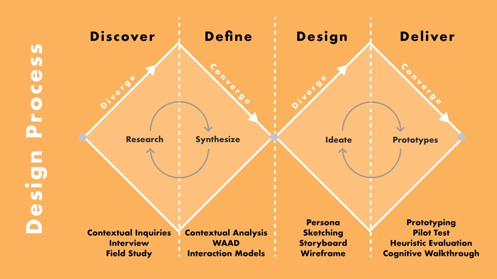
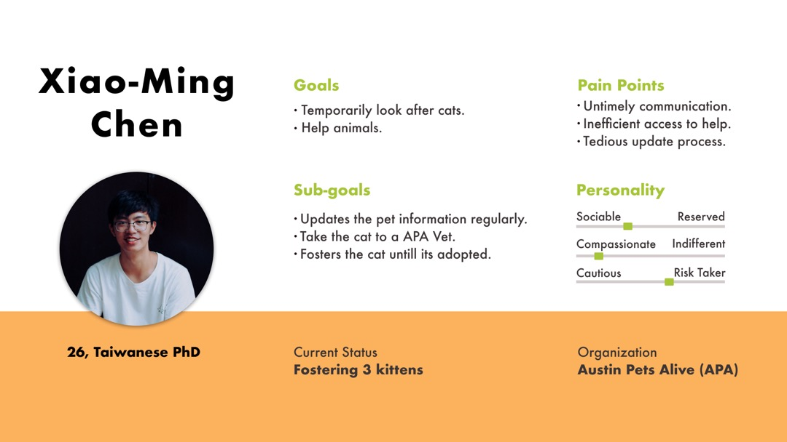

Petful
Pet Fostering Assistant App
Project aim
The Pet Fostering Assistant aims to support and provide assistance to pet foster parents and build a bridge between them and the animal shelter/organization. It will provide a single platform for all social and informational needs.
Type
Course Project
Team
Claire Chang, Ann Tsai, Shravya Naveen Kolavara
My role in the project
- Conducted UX research including contextual inquiries, interviews, and affinity diagrams to uncover the problem and generate insights.
- Created persona and user journey map to build empathy with target users.
- Developed wireframe and prototype and verified the design through pilot study and UX evaluation.
Duration
3.5 months, Sep 2019 - Dec 2019
Problem Background
Let’s imagine you want to foster a pet in Austin. It’s your first time and you don’t know how to do it, what kind of commitments you have to make...
You have a bunch of questions and you’re looking for a bridge to connect you and the animal shelter. Here we are to help you!🙋♀
Design Process
User Interviews
We interviewed 6 pet foster parents with different gender, fostering pet type, living style, shelter/rescue. We took turns to be interviewer and note-taker. Besides, we visited Austin Animal Center and interviewed 2 different staff members of different positions.
Interview Questions:
- Background
- Previous pet fostering experience
- Foster application process eg. How did you apply for being a foster parent? Walk us through your application process.
- Communication channels eg. How do you communicate with the organization?
- Information record methods eg. What kinds of information do you record about the pet?
- Seek help/health information eg. What kind of information you need but couldn’t find at first? Have you reached out to anyone or any online platform?
- Envision Do you have any suggestions for how to improve the current system?
Affinity Diagram
The affinity diagram is built from user interview notes. As a result, the notes are organized into 7 categories:
- User profile
- Pet fostering process: before - during - after
- Happy
- Sad
Requirements & Modeling
From affinity diagram, the most important problems are identified and waiting for improvements to discuss. These problems are extracted to 13 requirements which demonstrate what gaps should be filled in and how the system can do to help.
These 13 requirements are then categorized into 5 work bins:
- Application
- Information management
- Medical information
- Scheduling appointments
- Problems/seek help
Persona & User Journey Map
Design Ideation
The design solution focused on 5 work bins categorized from requirements and looked into what Xiao-Ming thinks, feels, conducted during the process.
The current system lacks a single platform for Xiao-Ming to communicate to Austin Pets Alive. The design solution aims to create one platform that combines all the required needs and relieves the identified pain points.
Sketches
Before starting sketching, we looked through the tasks and requirements we pulled out from data.
Each of us sketched for these tasks. Then we pooled our sketches together and discussed what design features should be incorporating and why. Finally, we sketched our final combination design and moved on to wireframes.
Wireframes
Click here to interact our prototype on Figma 👋
The followings are the conceptual design ideas for each task flow when working on wireframes.
Navigation/ExploreFoster parents have the criterion in mind when choosing foster pets. However, the current system doesn't support the filter function. So our design has the feature for users to filter the search results.
Pet’s ProfileUpdate health and behavior information
Currently, foster parents are using different tools to update information, and a standardized form has not existed. Our design focuses on creating a simple and standardized way for foster parents to update pet information.
Calendar and AppointmentOur design wants to provide the appointment process with the least steps to complete.
Messenger/ChatbotWe focus on creating a conversational method to solve the issues of problems and emergency requests.
Pilot Study & Evaluation
We interviewed 3 targeted users face to face and conducted the pilot study to investigate the usability and navigation for 5 tasks.
- Find a cat you want to foster
- Update pet information
- Solve the problem
- Make an appointment
- Update cat's weight
We also got opinions and perspectives from another team in the same class. They provided findings and recommendations by cognitive walkthrough and heuristic evaluation.
Insights
We learned that the navigation and the contents can be modified to be more intuitive.
- Home page: We can differentiate the layout design between events and foster pets because the need for finding events is different from finding cats and dogs.
- Explore page: We can provide the filter function before asking users to search for certain keywords.
- Health page: The graph showing weight information can be adjusted to be more clear.
- Explore page: We can provide the filter function before asking users to search for certain keywords.
- Navigation: In order to reduce confusion between different categories, we can change the category titles of the navigation bar or conduct tree testing to learn how users would find information on this app.
Reflection
User Research
Through this project, I realized the user research process can be really dynamic! For example, we tailored the directions of user interviews several times during the process.
Collaboration
My teammates and I spent a lot of time discussing and working on the project together. At the same time, we gave each other constructive suggestions and had arguments in a positive way. We see the same thing from different perspectives and that creates more sparks during our teamwork.